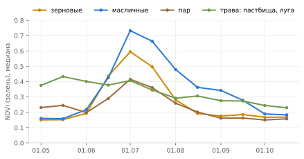
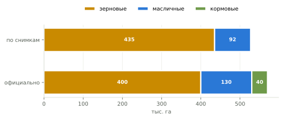
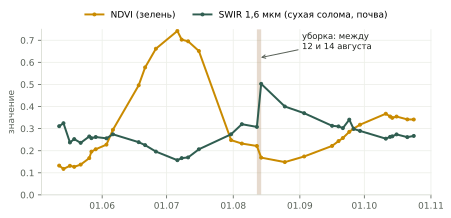
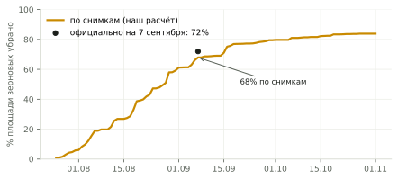

Пошаговое описание того, как сайт qazagrosat.vercel.app получает свои цифры: от бесплатных спутниковых снимков до карты полей, групп культур, дат уборки и землепользователей. С тем, насколько каждой цифре можно доверять, и где проходят её границы.
1 · снимкиSentinel-2, каждые 2–5 дней, май–октябрь
2 · поляграницы по тому, как земля меняется за сезон
3 · культурызерновые, масличные, пар, трава
4 · уборкарезкий скачок в ближнем инфракрасном
5 · владельцыпубличная кадастровая карта
01Снимки: что видит спутник
Основа всего: европейские спутники Sentinel-2 (программа Copernicus). Они снимают одно и то же место каждые 2–5 дней с разрешением 10 м: один пиксель — квадрат 10 × 10 м. Снимки бесплатные и открытые; мы берём их через Microsoft Planetary Computer. Дополнительно используются снимки Landsat 8 и 9 (30 м), чтобы закрыть пропуски в облачные недели.
Спутник видит не только обычные цвета. Он измеряет отражение в 13 диапазонах, в том числе в ближнем инфракрасном (NIR), где живая зелёная листва очень яркая, и в коротковолновом инфракрасном (SWIR, 1,6 и 2,2 мкм), где ярко светятся сухая солома и голая почва, а влажная зелень тёмная.
Из этих диапазонов считается NDVI — индекс зелени от 0 до 1: голая почва около 0,15, густая пшеница в июле 0,6–0,8. Это главный «пульс» поля за сезон.
Район делится на участки съёмки около 21 × 21 км. По каждому участку скачиваются все пригодные даты сезона (60–75 дат с мая по октябрь), облака и их тени по маске спутника вырезаются. Тайынша: 46 участков (сезон 2024 — 33, без окраин), Есиль: 31, Сандыктау: 24. Сезоны 2024–2026.
02Поля: где проходят границы
Поле — это участок, который весь сезон живёт одинаково: засеян в один день, зеленеет, желтеет и убирается вместе. Соседнее поле с другой культурой или датой сева ведёт себя иначе, и граница между ними видна по разнице кривых, даже если на одном снимке поля одного цвета.
Сегментация. Для каждого пикселя берётся его ряд значений за сезон; программа ищет линии, где ряды соседей резко расходятся, и делит участок на области (водораздел по «силе края»).
Чистка. Мелкие обрывки присоединяются к соседнему полю; кривые края выпрямляются (поля здесь прямоугольные); «острова» внутри поля, которые живут как поле, становятся его частью.
Разрез по видимым линиям. Граница между двумя полями, которую программа не разделила, часто видна на многих снимках сезона как прямая линия (межа, дорога, след разной обработки). Поле режется по такой линии, только если она видна на многих датах; каждая часть получает свою культуру и дату уборки. Проверка вслепую: 24 из 24 разрезов верны.
Контур для карты. Мелкие заливы по краю поля рисуются как часть поля, но гектары, культура и дата считаются только по засеянной земле.
Стыки участков. Участки съёмки перекрываются на 1 км; поле, разрезанное краем, склеивается, а копия поля, попавшая в два участка, считается один раз.
Строгий фильтр сайта. Поля меньше 50 га не показываются (кроме небольших полей, чья граница видна на многих снимках); поле, где за сезон не видно ни одного посева, показывается как пар.
Проверка. Зерновые и масличные внутри Тайыншинского района по снимкам — 549 тыс. га; официальный сев 2026 года — около 570 тыс. га вместе с кормовыми (40 тыс. га). Участки съёмки выходят за границу района: на карте видны и поля соседей, но все цифры «внутри района» считаются только по полям, центр которых лежит в районе.
03Культуры: по форме кривой сезона
Каждая культура рисует свою кривую зелени. Зерновые сеют в мае: поле голое до начала июня, зеленеет к концу июня, к августу желтеет и убирается. Рапс и лён зеленеют ярче, дольше держат зелень, а рапс в июле даёт характерный жёлтый цвет цветения. Пар весь сезон почти голый: его обрабатывают, сорняки снова и снова запахивают. Степь и пастбища зеленеют рано, ещё в мае, и медленно выгорают без всякого резкого события.

Медианный NDVI полей разных типов за сезон 2026, Есильский район (участки, проверенные глазом по снимкам; по 12 полумесяцев).
Какие группы есть на сайте
Группа
Как узнаётся
Что внутри
Зерновые
голое в мае, пик зелени в июле, созревание в августе
пшеница, ячмень, овёс, в том числе на корм
Масличные
ярче и дольше зелёное, жёлтое цветение (рапс)
рапс, лён, подсолнечник
Пар
голая почва большую часть лета
поле на отдыхе в этом году
Старые поля
трава на ровном прямоугольнике бывшей пашни, вдали от сёл
залежь и сенокосы на бывших полях
Степь и пастбища
зелено уже в мае, без цикла посева
степь, луга и пастбища вместе

Тайыншинский район, 2026: структура посевов по снимкам и официально (тыс. га). Масличных по снимкам меньше: часть льна и поздних масличных похожа на зерновые; кормовые, посеянные как зерновые, попадают в зерновые.
Почему сенокос не отделён от пастбища. Скошенный луг даёт резкое пожелтение полосами — это спутник видит хорошо. Но луг, который в этом году не косили, со спутника не отличить от пастбища: из четырёх сенокосов, размеченных по снимкам, косили только два. Поэтому на сайте одна группа «трава». На выборке из 40 участков без подсказок 37 действительно трава, 2 поля и 1 пар.
Поздний дождливый сезон. В 2024 году в Тайынше масличные и зерновые созрели одновременно, и ни по сроку созревания, ни по поздней зелени их не разделить: по снимкам масличных около 4% против официальных 21%. Две поправки правила не прошли проверку, поэтому для 2024 года на сайте зерновые и масличные показаны вместе как посевы.
04Сроки уборки: скачок, который видно сверху
Когда комбайн проходит поле, с него за один день исчезает стоящий колос и открывается сухая стерня и солома. В коротковолновом инфракрасном диапазоне (SWIR) это резкий скачок вверх, а зелень (NDVI) немного падает. Созревание идёт плавно неделями; уборка — ступенька за 1–3 дня. Правило ищет первую такую ступеньку после созревания.

Одно поле пшеницы (Есильский район, 254 га) в 2026 году: зелень растёт до июля, затем плавно падает (созревание); 12–14 августа SWIR скачком растёт — поле убрано.
Как устроено правило
Берутся только чистые даты: поле видно минимум на 85%.
Из значения каждой даты вычитается среднее по всему участку в тот же день: так погода и дымка не выглядят как уборка.
Уборка = первое резкое изменение после начала созревания, когда сразу несколько признаков (два диапазона SWIR, индекс обработки почвы, яркость, зелень, полосы от техники) меняются вместе и держатся несколько дат.
Если между двумя ясными датами больше 8 дней облаков, поле помечается «убрано в облачный промежуток» с окном дат.
Посев или нет. Поле, которое ни на одном совсем ясном снимке не было зелёным, раньше считалось незасеянным. В облачное лето (Есиль, июль 2024) так терялись настоящие посевы. Теперь поле считается засеянным, если весной оно было ровной голой пашней, летом позеленело хотя бы на частично ясном снимке и не было вспахано в июле (проверка вслепую: 20 из 22 верно). Это находит примерно половину потерянных посевов; остальной «пар» облачных сезонов может быть посевами.

Тайыншинский район, 2026: доля площади зерновых, где спутник увидел уборку, нарастающим итогом. На 7 сентября по снимкам 68%, официально 72%.
Границы точности. Дата одного поля надёжна до окна между двумя ясными снимками (обычно 2–5 дней, в дождливые недели — до двух). После дождя стерня темнеет и скачок слабее, поэтому линия хода уборки доходит до 80–85%, а не до 100%: часть полей убрана, но спутник этого не уверенно видит.
05Землепользователи: публичная кадастровая карта
Кто обрабатывает поле, берётся с публичной кадастровой карты map.gov4c.kz/egkn. На ней видны границы земельных участков и для многих — правообладатель (название и БИН).
Границы участков снимаются с карты и накладываются на наши поля; соседние поля без линии участка между ними объединяются в один массив.
Для каждого массива от 300 га берётся одна точка в его середине, и по ней в карточке участка читается правообладатель. Запросы делаются вручную в обычном браузере, в человеческом темпе, без автоматического скачивания.
Каждая запись проверяется: точка клика должна попасть в 120 м от нужного поля, иначе запись не принимается.
Район, 2026
Полей
Тыс. га
Компаний
Площадь с известным владельцем
Тайыншинский
4 038
849
86
55%
Есильский
2 138
658
36
45%
Сандыктауский
2 507
596
42
43%
Конфиденциальность. Называются только компании и кооперативы. Крестьянские хозяйства, полные товарищества и частные лица на сайте не называются, даже если карта их показывает. У многих участков карта правообладателя не показывает вовсе — поэтому в Есиле и Сандыктау доля ниже.
06Как мы проверяем каждое правило
Ни одно правило не попадает на сайт без проверки «вслепую»:
Правило и проходные пороги записываются заранее, до того как видна какая-либо проверочная выборка.
Случайные участки размечаются глазом по листам снимков (шесть дат сезона и инфракрасный снимок весны), не видя ответа правила. Файл с разметкой фиксируется контрольной суммой.
Только после этого правило применяется и сравнивается с разметкой. Не прошло — не публикуется и не «подкручивается» на тех же данных.
Так, например, правило переклассификации земли не прошло проверку в Есиле и туда не применено, а правило «весенняя зелень — это степь, а не пар» прошло (17 из 24 участков степи найдены, ни одно поле не задето) и применено. Не прошли и потому не используются: даты уборки по радару, поправки групп культур для сезона 2024, сравнение скорости уборки по хозяйствам.
Чему доверять, а к чему относиться осторожно
Надёжно
С оговоркой
Границы и площади полей; общая площадь посевов; ход уборки по району в целом
Деление на зерновые и масличные (масличных по снимкам меньше официального; в Тайынше 2024 года не разделены); дата уборки отдельного поля в дождливый период; доля пара в сухой степи и в сезоны с облачным июлем (Есиль 2024)
Данные: Copernicus Sentinel-2 и Landsat 8/9 через Microsoft Planetary Computer; публичная кадастровая карта map.gov4c.kz; официальные цифры районов из сообщений акиматов и прессы. Подробности правил и все проверки ведутся в рабочих заметках проекта. Ноябрь 2026.